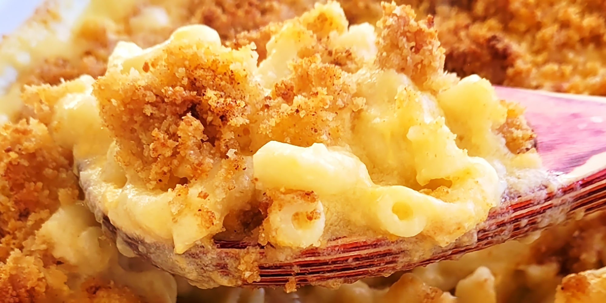

Mac And Cheese

Description
This is a nice rich mac and cheese. Serve with a salad for a great meatless dinner. Hope you enjoy it.
Ingredients
- Macaroni
- Butter
- flour
- milk
- cheddar cheese
- parmesan
Steps
- Preheat the oven to 350 degrees F (175 degrees C).
- Cook macaroni according to the package directions. Drain.
- Melt butter in a medium skillet over low heat. Gradually add flour, whisking until well combined. Slowly pour in milk, whisking constantly until smooth. Stir in cheeses, and cook over low heat until cheese is melted and the sauce is a little thick. Put macaroni in large casserole dish, and pour sauce over macaroni. Stir well.